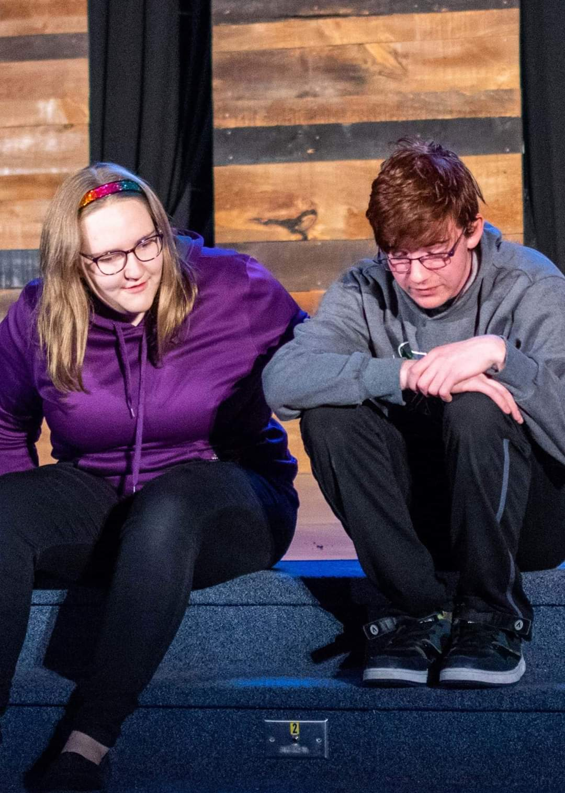
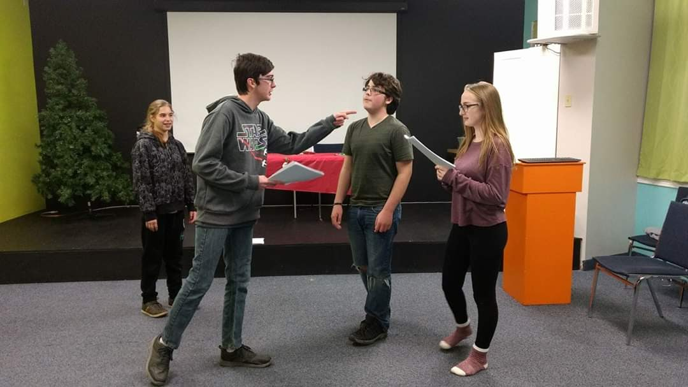
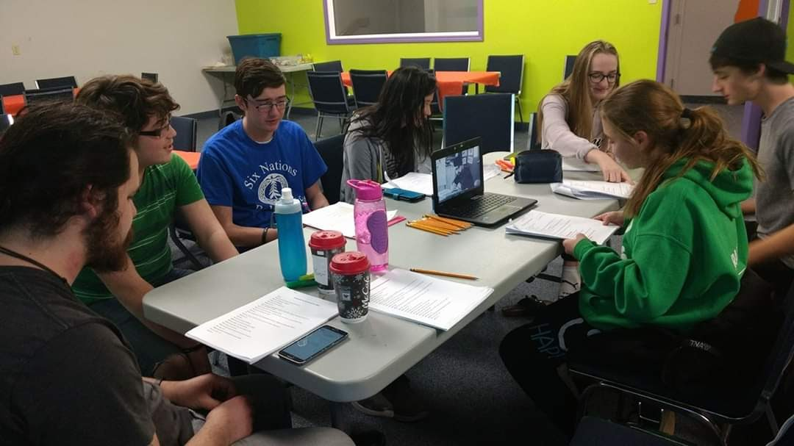

Daniel Astley's Portfolio
|
Theatre Experience
|
Video Projects
|
Audio Projects
|
Scripts and Short Stories
|
Contact
Spiritus Theatre: Somewhat True Tale of George & The Dragon
Dani played the role of Denny (who was also one of the two main Characters). The Show ran April of 2018 and was directed by Robbie Nagle.
Rehersal Photos and Videos


You Have reached the bottom of This page!!